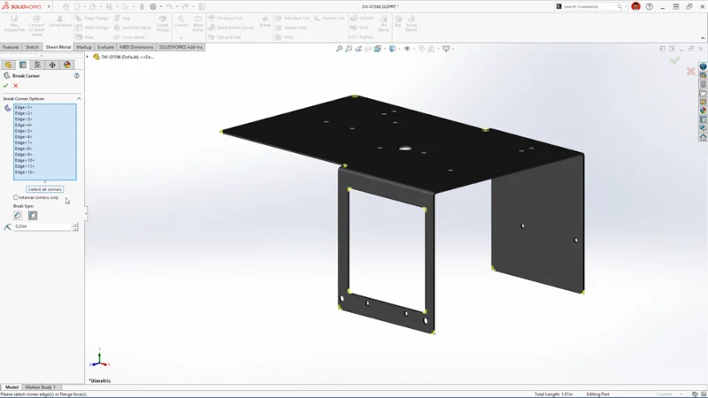

022025 education article
Small tool set, clear starting point
Simplified and default CommandManager layouts shown together.
FOR LEMONCADStart with common tools. Keep advanced commands accessible through search.
Official source ↗Eleven real UI references. How commands, selections and model history work together—and how to make those ideas approachable in LemonCAD.

These outlines are our annotations. The source image is unmodified. During a command, the PropertyManager uses the left region normally occupied by model structure. Official UI anatomy
Simplified and default CommandManager layouts shown together.
Top: creation tools. Left: model structure. Canvas: view controls.
Simplified tree on the left; default tree on the right.
The sketch command strip includes dimensions, relations and extrusion.
The View menu exposes the simplified workspace option.
A source washer and a larger assembly appear side by side.
Platform component selection appears beside the loaded desktop assembly.
A failure list, flagged feature tree and assistant share the screen.
The assembly structure is previewed before file generation.
xDesign places its Action Bar at the bottom of the browser workspace.
Images retain their original resolution. Publication labels do not guarantee the screenshot was captured in that exact release. The 2025 education overview visibly says SP1.0, while the article discusses SP2. Beta labels describe the February 2026 source, not a claim about current availability. xDesign is a separate browser product.
Keep the model, its parameters and its history understandable whether the user clicks a tool or writes a comment.
| Next design step | What changes in LemonCAD | Why it matters |
|---|---|---|
| 1. Real command panel | Replace tool-explanation dialogs with selection fields, dimensions and a preview. | A beginner can complete one exact operation. |
| 2. Contextual tools | Separate Sketch, Part and Assembly commands; add tool search. | Fewer icons to learn at each step. |
| 3. Explicit selection | Show Face / Feature / Component scope and highlight its tree entry. | “This hole” cannot silently mean every hole. |
| 4. Meaningful history | Add search, dependency hints and distinct failed/suppressed/rollback states. | Users can understand and repair earlier decisions. |
| 5. Constraints and mates | Explain what still moves and which relation conflicts. | Precision becomes visible, not an unexplained status color. |
| 6. Helpful failure recovery | Keep the last valid shape and link repair advice to the failed feature. | A rejected change does not destroy the working design. |
This is a design recommendation. Executable geometry, sketch/mate solving and reliable feature references still require a CAD modeling layer. Detailed evidence and priorities ↗